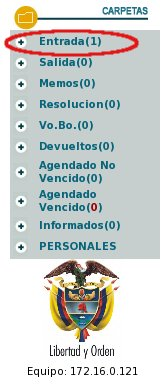
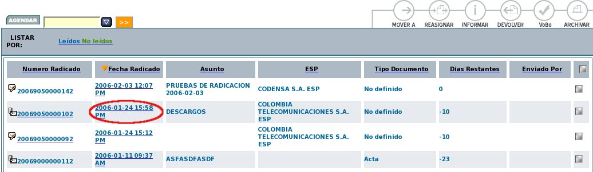
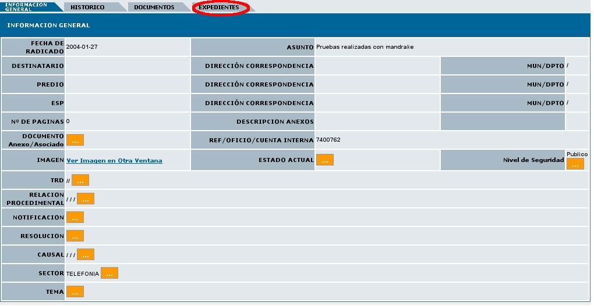
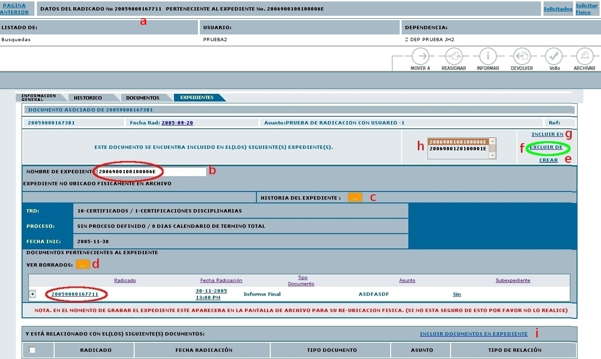

Excluir un radicado de un Expediente
Esta
funcionalidad permite al usuario excluir un radicado de un expediente
existente.
1. Seleccionar la carpeta donde se encuentra el radicado que ya posee un Expediente el cual se quiere excluir de un expediente:

2. Ingresar al radicado por la fecha de radicación:

3. Dar click en la pestaña Expedientes:

4. El sistema se ubica en la vista de "Expedientes" la cual está compuesta por:

a. Datos Radicado: Indica el numero de radicado con el que se va a trabajar.
b. Nombre de Expediente: Muestra el numero del expediente donde se encuentra actualmente el radicado.
c. Historia del Expediente: Muestra todas las operaciones realizadas al expediente donde se encuentra el radicado.
d. Ver Borrados: Muestra los documentos anexos que han sido borrados del expediente por radicado.
e. Enlace Crear: Nos permite crear un nuevo expediente para el mismo radicado. (Se debe tener en cuenta que para qué este enlace aparezca se debe poseer permiso de creación de expedientes.)
f. Enlace Excluir de: Nos permite excluir un radicado de un expediente determinado.
g.
Enlace Incluir en: Nos permite
incluir este radicado en un expediente
distinto
h. Al dar
clic sobre
cualquiera de los numeros de expedientes este actualiza la pagina con
la informacion de los radicados que se encuentran en el numero
seleccionado (La cual aparece abajo de ver borrados).
i. Enlace “INCLUIR DOCUMENTOS EN EXPEDIENTE”muestra la pantalla de permite anexar los documentos necesarios en el mismo expediente donde se encuentra el radicado.
5. Excluir un radicado de un expediente:
Al dar clic en el enlace EXCLUIR DE aparecerá la siguiente ventana, donde se debe marcar de que expediente se desea excluir el radicado.
Paso seguido se procede a dar clic en el botón EXCLUIR y aparecerá el siguiente complemento:
6. Al dar clic en el botón CONFIRMAR aparecerá una ventana con los datos de en que expedientes se encuentra incluido el radicado.
Si se desea excluir
un radicado que ya ha sido archivado, el programa sacara un error de
que no se puede y que debe comunicarse con archivo para que le entrege
el radicado fisico y se pueda excluir ese radicado.
Para todos los radicados que son grabados en un expediente, automáticamente se envia una notificación a las personas de Archivo para que realicen el procedimiento de Archivado físico del documento a cada expediente.
El expediente virtual debe reflejar una fiel copia del expediente físico, por lo anterior, recuerde entregar todos los documentos físicos que se requieran al grupo de archivo correspondiente.